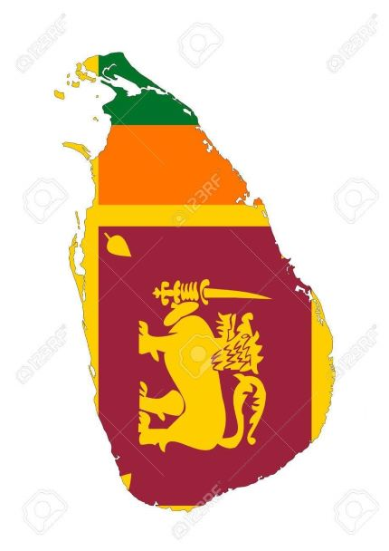

THRINCOMALEE
245 rewives
South Province, Sri Lanka
BEAUTIFULL PLACE IN SRI LANKA
An important ancient site
15,000 LKR one day
According to inscriptions found in the caves which honeycomb the base of the rock fortress, Sigiriya served as a place of religious retreat as far back as the third century BC, when Buddhist monks established refuge in the locale. It wasn’t until the fifth century AD, however, that Sigiriya rose briefly to supremacy in Sri Lanka, following the power struggle which succeeded the reign of Dhatusena (455-473) of Anuradhapura. King Dhatusena had two sons, Mogallana, by one of the most desired and finest of his queens, and Kassapa, by a less significant consort. Upon hearing that Mogallana had been declared heir to the throne, Kassapa rebelled, driving Mogallana into exile in India and imprisoning his father, King Dhatusena. The legend of Dhatusena’s subsequent demise offers an enlightening illustration of the importance given to water in early Sinhalese civilization. Threatened with death if he refused to reveal the whereabouts of the state treasure, Dhatusena agreed to show his errant son its location if he was permitted to bathe one final time in the great Kalawewa Tank, of which the construction he had overseen. Standing within the tank, Dhatusena poured its water through his hands and told Kassapa that this alone was his treasure. Kassapa, none too impressed, had his father walled up in a chamber and left him to die. Mogallana, meanwhile, vowed to return from India and reclaim his inheritance. Kassapa, making preparations for the expected invasion, constructed a new dwelling on top of the 200-metre-high Sigiriya rock – a combination of pleasure palace and indestructible fortress, which Kassapa intended would emulate the legendary abode of Kubera, the god of wealth, while a new city was established around its base. According to folklore, the entire fortress was built in just seven years, from 477 to 485 AD.
THE SPECIALTY IS THRINCOMALEE
The city has developed from a village settlement on the promontory dedicated to the Hindu shrine. The origin of the term Ko, Kone and Konatha lies in the Old Tamil word for the terms "Lord", "King" or "Chief", which allude to the deity that presides here; this term appears in several Tamil Brahmi inscriptions of the 6th century BCE — 2nd century CE. Trincomalee, the coastal peninsula town where Koneswaram is located is an anglicized form of the old Tamil word "Thiru-kona-malai" (Tamil: திருகோணமலை), meaning "Lord of the Sacred Hill", its earliest reference in this form found in the Tevaram of the 7th century by Sambandhar. Thiru is a generally used epithet denoting a "sacred" temple site while Malai means mountain or hill; Middle Tamil manuscripts and inscriptions mention the monumental compound shrine as the Thirukonamalai Konesar Kovil.[3][4][5][6] Kona (Tamil: கோண) has other meanings in Old Tamil such as peak, while another origin for the term Koneswaram could come from the Tamil term Kuna (East). Therefore, other translators suggest definitions of Trincomalee such as "sacred angular/peaked hill", "sacred eastern hill" or "three peaked hill".[7][8][9] The temple was constructed atop Swami Rock, also called Swami Malai or Kona-ma-malai, a cliff on the peninsula that drops 400 feet (120 metres) directly into the sea.[3]
places
.jpg)
.jpg)
.jpg)
.jpg)
Trincomalee (English: /ˌtrɪŋkoʊməˈliː/; Tamil: திருகோணமலை, romanized: Tirukōṇamalai; Sinhala: ත්රිකුණාමළය, romanized: Trikuṇāmaḷaya) also known as Gokanna/Gokarna,[1] is the administrative headquarters of the Trincomalee District and major resort port city of Eastern Province, Sri Lanka. Located on the east coast of the island overlooking the Trincomalee Harbour, 237 kilometres (147 mi) north-east of Colombo, 182 kilometres (113 mi) south-east of Jaffna and 111 kilometres (69 mi) miles north of Batticaloa, Trincomalee has been one of the main centres of Sri Lankan Tamil language speaking culture on the island for over two millennia. With a population of 99,135,[2] the city is built on a peninsula of the same name, which divides its inner and outer harbours. People from Trincomalee are known as Trincomalians and the local authority is Trincomalee Urban Council. Trincomalee city is home to the famous Koneswaram temple from where it developed and earned its historic Tamil name Thirukonamalai. The town is home to other historical monuments such as the Bhadrakali Amman Temple, Trincomalee, the Trincomalee Hindu Cultural Hall and, opened in 1897, the Trincomalee Hindu College. Trincomalee is also the site of the Trincomalee railway station and an ancient ferry service to Jaffna and the south side of the harbour at Muttur. The recorded history of Trincomalee spans more than two and a half thousand years, beginning with civilian settlement associated with the Koneswaram temple in the pre-modern era. One of the oldest cities in Asia, it has served as a major maritime seaport in the international trading history of the island with South East Asia. From its suburban village of Kankuveli, some of Asia's earliest medical research at the "Agathiyar Thapanam", the Siddhar Tamil medical university established by Agastya, helped spread Tamil Tamraparniyan culture across the continent. In the ancient world, it was successively the capital of eastern kingdoms of the Vanni country, developing under the Anuradhapura Kingdom, Pallava Dynasty, Chola Dynasty, Pandyan Dynasty, the Vannimai chieftaincies and the Jaffna kingdom through the Koneswaram shrine's revenue. Trincomalee's urbanization continued when made into a fortified port town following the Portuguese conquest of the Jaffna kingdom, changing hands between the Danish in 1620, the Dutch, the French following a battle of the American Revolutionary War and the British in 1795, being absorbed into the British Ceylon state in 1815. The city's architecture shows some of the best examples of interaction between native and European styles. Attacked by the Japanese as part of the Indian Ocean raid during World War II in 1942, the city and district were affected after Sri Lanka gained independence in 1948, when the political relationship between Tamil and Sinhalese people deteriorated, erupting into civil war. It is home to major naval and air force bases at the Trincomalee Garrison. The city also has the largest Dutch fort on the island. The Trincomalee Bay, bridged by the Mahavilli Ganga River to the south, the historical "Gokarna" in Sanskrit, means "Cow's Ear", akin to other sites of Siva worship across the Indian subcontinent. Uniquely, Trincomalee is a Pancha Ishwaram, a Paadal Petra Sthalam, a Maha Shakti Peetha and Murugan Tiruppadai of Sri Lanka; its sacred status to the Hindus has led to it being declared "Dakshina-Then Kailasam" or "Mount Kailash of the South" and the "Rome of the Pagans of the Orient". The harbour is renowned for its large size and security; unlike any other in the Indian Ocean, it is accessible in all weathers to all craft. It has been described as the "finest harbour in the world" and by the British, "the most valuable colonial possession on the globe, as giving to our Indian Empire a security which it had not enjoyed from elsewhere". Popular tourist destinations include its beaches at Uppuveli, Salli and Nilaveli, used for temple visits, surfing, scuba diving, fishing and whale watching, and the Kanniya Hot Springs. Trincomalee is served by a campus of the Eastern University, Sri Lanka and has been the inspiration of both domestic and international poetry, films, music and literature for many centuries.
LOCATION ON MAP
PLACE TO STAY IN THRINCOMALEE(Following accommodation list is randomly generated) Hotels & Other Accommodation)
RECOMMENDRD PLACES

SINH HOTEL
Email:-@gmail.comTHRINCOMALEE street Tell:-0714406134

LALITHA HOTEL
Email:-@gmail.comTHRINCOMALEE god street Tell:-0714406134

NORA HOTEL
Email:-@gmail.comTHRINCOMALEE god street Tell:-0714406134

YANULA HOTEL
Email:-@gmail.comTHRINCOMALEE god street Tell:-0714406134
- Entire house you will have the entire flat for you
- Echanced Clean This host has committed to Sl tro's cleaning process
- Great Location 90% of recent guest gave the location a 5 star rating
- Great Check-in Experience 100% of recent guest gave the check-in process a 5 star rating

More
COME AND ENJOY THE BEAUTY OF LANKA
open every day, We will work to provide 100% good service